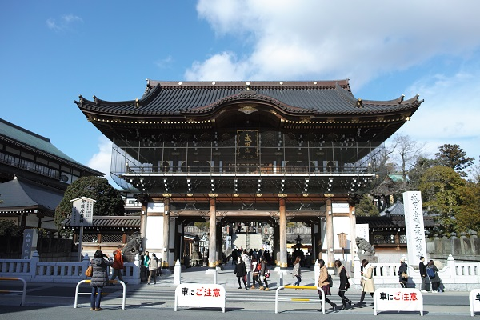

水戸街道新宿から分岐して成田山新勝寺まで約58Km 標高差あまりない。
埼玉県の自宅から電車を乗り継ぎ日帰り 計3日間で完歩する。ｽﾀｰﾄは日本橋にしました。
| 年月日 | 出発駅・時間 | 到着駅・時間 | 歩き距離・時間 | 写真ﾌﾞﾛｸﾞ |
|---|---|---|---|---|
| 2015/2/4 | 亀有駅_10:04 | 習志野駅_16:01 | 26.1Km：5時間56分 | 2015/2 2015/2 |
| 2015/2/7 | 習志野駅駅_10:28 | 京成佐倉駅_16:49 | 23.5Km：6時間21分 | 2015/2 |
| 2015/2/19 | 京成佐倉駅_10:38 | 成田駅_14:22 | 16.2Km：3時間44分 | 2015/2 完歩 |
成田山新勝寺 山門
